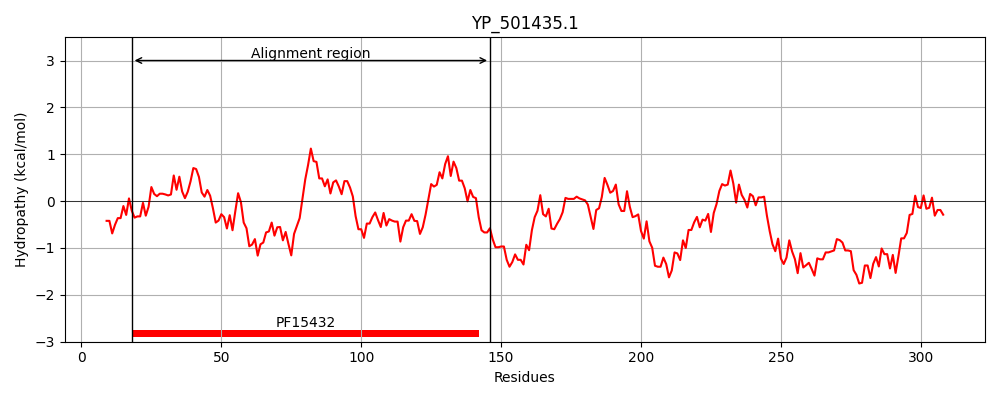
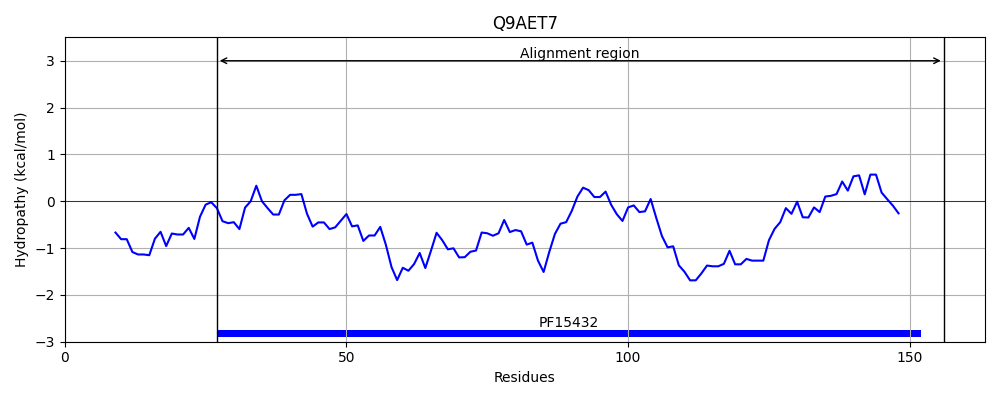
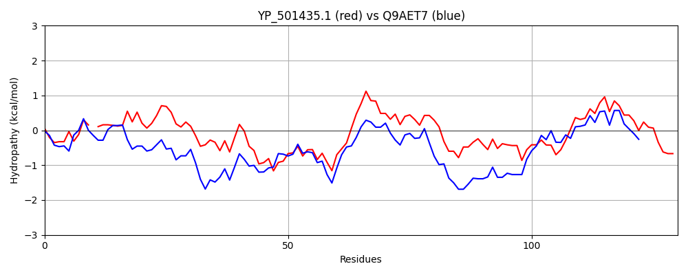

Hit Accession: Q9AET7
Hit TCID: 3.A.5.10.1
Hit Description: gnl|BL_ORD_ID|17725 gnl|TC-DB|Q9AET7|3.A.5.10.1 Accessory secretory protein Asp3 - Streptococcus gordonii.
Mach Len: 130
e:0.000000
Query TMS Count : 0
Hit TMS Count: 0
TMS-Overlap Score: 0.000000
Predicted Substrates:None
BLAST Alignment:
Score: 248 , Bit scores: 100 bits, E-value: 9.4e-26, Alignment length: 130, Percentage identity: 37
Query: 18 TFMYGSKVSF-SNGEVTFINPLMPSGLPIHEWLMLKQFSKYKSAPSLPILRRGQHYKLHFDFDATPAGSVYFIIIFYNKNGTKLSTEIVKSNSITIQYPDEAYAYKIKMMNAASTSLIFRCLTITEMTHQ 146
T++YGS + F S +V F N L+ SG IHEW + + PSLP+L+RG+ Y L D + P+ SV+ +IF+++ ++S + +S+ +T YP+EAY+YK+++++A S F CL I E+ +
Sbjct: 27 TYLYGSTIIFHSPDQVYFENKLIASGQTIHEWSSSWNYQGDRQVPSLPLLKRGRSYSLTRDMTSYPSESVFLKLIFFDRYNREVSNHVERSDKMTFTYPEEAYSYKVQLLSAGVESFEFHCLRIEEILEE 156 | Protein Hydropathy Plots: |
|---|
|  |  |
Pairwise Alignment-Hydropathy Plot:
|
|---|
|  |